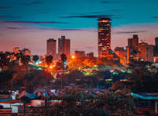
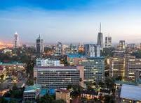
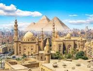
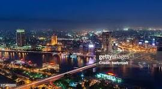
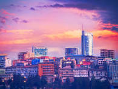
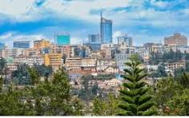
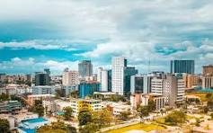
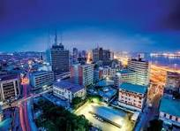

Nairobi is the capital city of kenyas and one of the fastest-growing cities in Africa. it is also known as the 'Green City in the sun'because of it's beautiful environment and parks. Nairobi is a major center for business, technology and tourism.


Cairo is the capital city of Egypt and one of the biggest cities in Africa. It is famous for the pyramids, river nile and the ancient history.


Kigali is the capital city of Rwanda. it is known for being one of the cleanest and organised cities in Africa.


Lagos is the capital city of Nigeria. it is known for business entertainment and busy urban life.